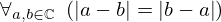
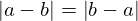

Theorem abs_diff_reversal of type Forall¶
from the theory of proveit.numbers.absolute_value¶
see dependencies
In [1]:
import proveit
# Automation is not needed when only building an expression:
proveit.defaults.automation = False # This will speed things up.
proveit.defaults.inline_pngs = False # Makes files smaller.
%load_theorem_expr # Load the stored theorem expression as 'stored_expr'
# import the special expression
from proveit.numbers.absolute_value import abs_diff_reversal
In [2]:
# check that the built expression is the same as the stored expression
assert abs_diff_reversal.expr == stored_expr
assert abs_diff_reversal.expr._style_id == stored_expr._style_id
print("Passed sanity check: abs_diff_reversal matches stored_expr")
In [3]:
# Show the LaTeX representation of the expression for convenience if you need it.
print(stored_expr.latex())
In [4]:
stored_expr.style_options()
In [5]:
# display the expression information
stored_expr.expr_info()
| core type | sub-expressions | expression | |
|---|---|---|---|
| 0 | Operation | operator: 1 operand: 3 |  |
| 1 | Literal |  | |
| 2 | ExprTuple | 3 | |
| 3 | Lambda | parameters: 4 body: 5 | |
| 4 | ExprTuple | 34, 33 |  |
| 5 | Conditional | value: 6 condition: 7 | |
| 6 | Operation | operator: 8 operands: 9 |  |
| 7 | Operation | operator: 10 operands: 11 | |
| 8 | Literal |  | |
| 9 | ExprTuple | 12, 13 |  |
| 10 | Literal |  | |
| 11 | ExprTuple | 14, 15 | |
| 12 | Operation | operator: 17 operand: 22 | |
| 13 | Operation | operator: 17 operand: 23 | |
| 14 | Operation | operator: 20 operands: 19 |  |
| 15 | Operation | operator: 20 operands: 21 |  |
| 16 | ExprTuple | 22 | |
| 17 | Literal |  | |
| 18 | ExprTuple | 23 | |
| 19 | ExprTuple | 34, 24 |  |
| 20 | Literal |  | |
| 21 | ExprTuple | 33, 24 |  |
| 22 | Operation | operator: 26 operands: 25 |  |
| 23 | Operation | operator: 26 operands: 27 | |
| 24 | Literal |  | |
| 25 | ExprTuple | 34, 28 |  |
| 26 | Literal |  | |
| 27 | ExprTuple | 33, 29 | |
| 28 | Operation | operator: 31 operand: 33 |  |
| 29 | Operation | operator: 31 operand: 34 |  |
| 30 | ExprTuple | 33 |  |
| 31 | Literal |  | |
| 32 | ExprTuple | 34 |  |
| 33 | Variable |  | |
| 34 | Variable |  |